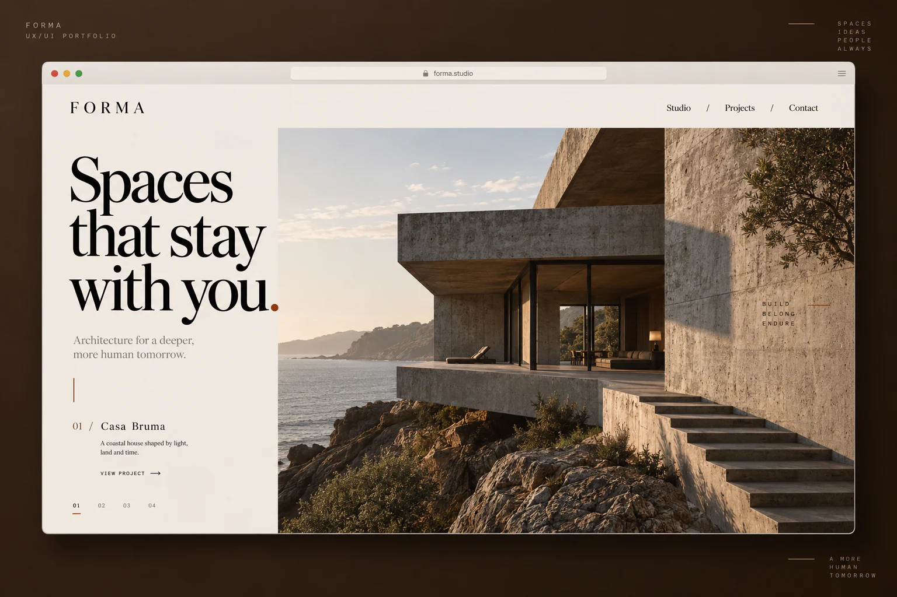

Find the visual language
Warm neutral surfaces, oversized serif headlines and precise orange details echo architectural drawings. Large photographs and deliberate white space create an editorial rhythm.
Forma
An architecture website concept where spatial photography and quiet typography set the pace.

Architecture portfolios need to communicate space, material and atmosphere without making the work hard to explore. This concept puts the buildings first while keeping project navigation clear.
Warm neutral surfaces, oversized serif headlines and precise orange details echo architectural drawings. Large photographs and deliberate white space create an editorial rhythm.
Browse a visual index of projects with concise location and material details.
Explore each building through a sequence of photographs and design notes.
Move naturally from the studio approach to a project enquiry.
A self-initiated concept exploring the product experience and visual direction.